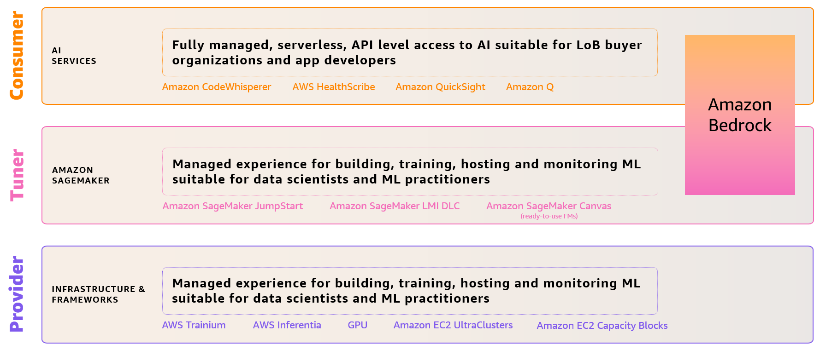

A Tour of GenAI üöÄ
There and back again...
Contents üìì
- GenAI in a nutshell üå∞
- Building GenAI on AWS
- GenAI in practice
- References
Warning ⚠️
This presentation is a work in progress…
and always will be
Note on implementation ü뮂Äçüíª
The slides were created using reveal.js
and the presentation is hosted on GitHub Pages
GenAI in a nutshell
In the beginning
there was nothing *,
which exploded…
― Terry Pratchett, Lords and Ladies (1992)
ü•Øüí•
* Well, not exactly…
History has a way of repeating itself...
![The history of AI in hieroglyphs](https://huggingface.co/spaces/stabilityai/stable-diffusion/discussions/new?title=The+history+of+AI+in+hieroglyphs&description=%3Cdiv+style%3D%27display%3A+flex%3B+flex-wrap%3A+wrap%3B+column-gap%3A+0.75rem%3B%27%3E%0A%3Cimg+src%3D%27https%3A%2F%2Fs3.amazonaws.com%2Fmoonup%2Fproduction%2Fuploads%2Fnoauth%2FHMa340FqXSuttJ3MPiy2s.jpeg%27+width%3D%27400%27+height%3D%27400%27%3E%0A%3Cimg+src%3D%27https%3A%2F%2Fs3.amazonaws.com%2Fmoonup%2Fproduction%2Fuploads%2Fnoauth%2FTz-uNFia4J6HZ6EQtSgID.jpeg%27+width%3D%27400%27+height%3D%27400%27%3E%0A%3Cimg+src%3D%27https%3A%2F%2Fs3.amazonaws.com%2Fmoonup%2Fproduction%2Fuploads%2Fnoauth%2Fd4rRtY-CL6gLP7cwMFQVZ.jpeg%27+width%3D%27400%27+height%3D%27400%27%3E%0A%3Cimg+src%3D%27https%3A%2F%2Fs3.amazonaws.com%2Fmoonup%2Fproduction%2Fuploads%2Fnoauth%2FvfAxjRLa3evSHlEKD6K7q.jpeg%27+width%3D%27400%27+height%3D%27400%27%3E%0A%3Cimg+src%3D%27https%3A%2F%2Fs3.amazonaws.com%2Fmoonup%2Fproduction%2Fuploads%2Fnoauth%2FV3zYgjxqMzw3Jji52ZHxD.jpeg%27+width%3D%27400%27+height%3D%27400%27%3E%0A%3Cimg+src%3D%27https%3A%2F%2Fs3.amazonaws.com%2Fmoonup%2Fproduction%2Fuploads%2Fnoauth%2FZKpvGUYH-DIlb9acjicHN.jpeg%27+width%3D%27400%27+height%3D%27400%27%3E%0A%3Cimg+src%3D%27https%3A%2F%2Fs3.amazonaws.com%2Fmoonup%2Fproduction%2Fuploads%2Fnoauth%2FV8B2qiOnf48mksf3XzCXV.jpeg%27+width%3D%27400%27+height%3D%27400%27%3E%0A%3Cimg+src%3D%27https%3A%2F%2Fs3.amazonaws.com%2Fmoonup%2Fproduction%2Fuploads%2Fnoauth%2Fjkl_d6AhMeh4K7XyopyHe.jpeg%27+width%3D%27400%27+height%3D%27400%27%3E%0A%3Cimg+src%3D%27https%3A%2F%2Fs3.amazonaws.com%2Fmoonup%2Fproduction%2Fuploads%2Fnoauth%2Fa7gTkIT8bQkH8Ze5JX_wz.jpeg%27+width%3D%27400%27+height%3D%27400%27%3E%0A%3C%2Fdiv%3E){kind=link}
1960s: The ELIZA Effect

2022: The ChatGPT Effect
Can you spot the differences?
üëÄLet's back up a little‚Ķ
2017: Hello Transformers!
Attention Is All You Need introduces the
Transformer architecture
Motivation
Previous seq2seq models were
SLOW üêå and FORGETFUL ü§î

Transformers use
an encoder-decoder architecture…
‚Ķ made of many building blocks üß±

Zooming in on Attention üîé
Visualizing Attention üëÅÔ∏è

Deconstructing Attention
Multi-head Attention
History of Attention
Transformers have driven
significant progress in AI

Decoder-only: GPT-1..4

Encoder-only: BERT and its progeny

Encoder-decoder: T5, BART

How is this all connected with GenAI?
Let's focus on the 'generative' part
There are 2 main classes of statistical models…
Discriminative models
draw boundaries in data space
{kind=link}
Example: Van Gogh or not Van Gogh? üëÇüèª
Generative models
describe how data is placed
throughout the data space
Example: Picture me a üê¥
Since the model is probabilistic,
we can just sample from it to create new data
We can connect the two using Bayes' Rule
There are many types of generative models…
Overview of Generative Models

2013: Variational Autoencoders (VAE)
2014: Generative Adversarial Networks (GAN)
GAN Samples
2015: Diffusion Models
Diffusion takes a signal and turns it into noise
Signal $\rightarrow$ … $\rightarrow$ Noise

Diffusion models are trained to denoise noisy images

New images are created by
iteratively denoising pure noise
Noise $\rightarrow$ … $\rightarrow$ Signal

January 2021: OpenAI releases DALL-E
DALL-E Samples Comparison
July 2022: Midjourney enters open beta

AI-generated paintings as digital art
Théâtre d'Ópera Spatial (Midjourney + Gigapixel AI)
SPOILER ALERT GenAI and Hollywood 2.0
Learn how Runway helped create the rock scene ü™® in
'Everything Everywhere All at Once.'
August 2022: Stability AI releases Stable Diffusion
Latent Diffusion Model Architecture

Stable Diffusion Components
January 2022: InstructGPT
Learning to follow instructions
from human preferences
November 2022: OpenAI releases ChatGPT
So, where are we now?
GenAI is the fastest growing trend in AI
üìà
The "Cambrian Explosion" of GenAI

Developer Adoption
Stable Diffusion accumulated
40k stars
on GitHub in its first 90 days
Consumer Adoption
ChatGPT reached the 1M users mark
in
just 5 days
GenAI according to GenAI
Let's break it down…
# 1
GenAI can generate new content
similar to what of a human would produce
Pop Quiz
Which painting was generated with AI?
If you answered A, you're in big trouble…
or was it the other way around? ü§î
# 2
GenAI is powered by Foundation Models
or FMs for short
These are really large models…
trained on massive amounts of unlabeled data…
that can be adapted to a wide range of tasks
Traditional vs Foundation Models
When dealing with natural language,
we usually talk about Large Language Models
or LLMs for short

LLMs are really just a proper subset of FMs
How do these models work?
If the input is text-based, we call it a Prompt

# 3
GenAI applies to many use cases
Some examples include…
Productivity (Text Generation) üí¨
Chat (Virtual Assistant) üíÅ
Summarization (Text Extraction) üìñ
Search üîé
Code generation ü뮂Äçüíª
Music creation üé∂
Video Editing üé•
GenAI is rapidly transforming AI
Text-to-Image (txt2img)
Image-to-Text (img2txt)
Image-to-Image (img2img)
Text-to-GIF (txt2gif)

Text-to-Video (txt2video)

Text-to-Code (txt2code)

GenAI is taking over the world

"Every industry that requires
humans to create original work (…)
is up for
reinvention."
But there are "some" challenges…
Hallucinations üçÑ
Example: Backwards Epigenetic Inheritance
A causally impossible scientific theory
just a prompt away
"(…) they used to lie and say terrible things.
Now they just lie and that's
interesting enough"
― Gary Marcus
Actually…
Philosophically speaking,
LLMs are üêÇüí©ers not liars
def. Bullshit
Any statement produced without
particular concern for reality and truth
"Bullshit is a greater enemy of truth than lies are."
― Harry Frankfurt, On Bullshit (2005)Why do these models hallucinate?
LLMs as "compact" and "lossy"
representations of knowledge
How can we prevent/reduce hallucinations?
RL with Human Feedback (RLHF)
Human evaluators review the model's responses and pick the most appropriate for the users' prompts

Early Detection
Identify hallucinated content and
use it during training

Regularization
Often overlooked, these techniques
can help alleviate overfitting
Temperature Tuning üå°Ô∏è
Temperature regulates the randomness
or creativity of the responses
Chain-of-Thought (CoT) Reasoning ü§î
Using CoT prompting we can improve a model's ability to perform complex reasoning
External Data Sources
Provide access to relevant data from a knowledge base
Treat the task as a search problem grounded in data
Security üõ°Ô∏è
Training LLMs on untrusted data
has become the norm rather than the exception
According to Wan et al. (2023), launching a successful data poisoning attack during instruction tuning
takes only a few hundred 'poisoned apples' üçé‚ò†Ô∏èü§¢

Prompt Hacking
Attack that exploits the vulnerabilities of LLMs,
by manipulating their inputs or prompts
Sustainability üå±
The open source community has played a key role in this dimension
Let me tell you the story of LLaMA ü¶ô
February 24th 2023: Meta releases LLaMA ü¶ô

March 3rd 2023: LlaMALeaks ü§´
March 10th 2023: llama.cpp - initial release
March 12th 2023: LlaMA runs on a Raspberry Pi
March 13th 2023: Stanford releases Alpaca

Training recipe

March 14th 2023 ü•ß: LlaMA runs on a Pixel 6
March 19th 2023: LMSYS Org releases Vicuna
May 4th 2023 üååüî´: Moats, moats, moats
üêß
"I often compare open source to science. Science took this whole notion of developing ideas in the open and improving on other people's ideas. It made science what it is today and made the incredible advances that we have had possible."
― Linus TorvaldsWhat comes next?
Building GenAI on AWS
For more information, visit aws.amazon.com/generative-ai
GenAI Workloads

The AWS AI/ML Stack (Redux)
AWS supports GenAI in all layers of the stack
Let's start by looking at the bottom layer‚Ķ
ML Frameworks & Infrastructure
There's some evidence that large-scale models
lead to better results*
* Read the fine print!
AI models are getting bigger…
… a lot bigger!
How do we train a large model like, say…
Stable Diffusion?
Let's check out Stability's HPC cluster ü¶Æ
Training large-scale models comes
with a lot of challenges
Hardware üíª
Health Checks ü뮂Äç‚öïÔ∏è‚ö†Ô∏è
Orchestration üéªüé∂
Data üíæ
Scale üìà
Cost üí∞
HPC ML cluster for distributed training
1-click HPC
Compute: EC2 UltraClusters

Current NVIDIA A100 GPU Count
Compute: EC2 Trn1/Trn1n
Instances

Neuron on Trn1 Instances

Annapurna Labs
The 'Secret Sauce' behind AWS's success

Networking: Elastic Fabric Adapter (EFA)
Storage: ML training storage hierarchy
Orchestration: AWS Parallel Cluster
How to create a pcluster
pcluster create-cluster -f config.yaml ...
Is there a better way?
#1 Train Stable Diffusion on Amazon SageMaker

Step-by-Step Guide
-
Prepare Data
- Download
LAION-5BParquet files with SageMaker Processing Jobs - Download
LAION-5Bimages and text pairs - Create FSx for Lustre volume from S3 path
- Build JSON Lines index
- Download
-
Train Model
- Run on 192 GPUs with SageMaker distributed training
-
Evaluate Model
- 1 epoch on 50M image/text pairs with ~200 GPUs? 15 mins!
-
Deploy Model
- Run inference using SageMaker Hosting
Accelerate Transformers on AmazonSageMaker
with AWS Trainium and AWS Inferentia
Inf2 on Amazon SageMaker
#2 Use a pre-trained FM
from Amazon SageMaker JumpStart
Models on JumpStart can be accessed in 3 ways
Benefits of pre-trained FMs
-
Pre-trained models for each use case
-
Easy to customize + manage models at scale
-
Data is kept secure and private on AWS
-
Responsible AI support across ML lifecycle
-
Fully integrated with Amazon SageMaker
Jupyter AI: Bring GenAI to Jupyter Notebooks
#3 Call Amazon Bedrock! ⛰️
Amazon Bedrock
API-level access to FMs
For more information, visit
aws.amazon.com/bedrock
Key Benefits
Bedrock supports a wide range of FMs
You are always in control of your data üéõÔ∏è
Bedrock/LangChain Integration ‚õ∞Ô∏èü¶úüîó
Amazon CodeWhisperer
Build apps faster and more securely
with an AI coding companion
Open-source reference tracking
Security scanning
Multiple language and IDE support
"(…) participants who used CodeWhisperer were 27% more likely to complete tasks successfully and did so an average of 57% faster than those who didn't use CodeWhisperer."
― AWS News BlogBuild GenAI the easy way with managed services
Ready to learn how?
GenAI in Practice
Use Cases, Patterns & Solutions
üõ†Ô∏è
In just a few months, GenAI has exploded…

GenAI Landscape

By the time you read this,
the last slide will be completely…
Yet, some common patterns are starting to emerge…

Retrieval Augmented Generation (RAG)

Document Summarization

Document Generation with Facts
Emerging architectures for LLM applications
We can build all of these on AWS
RAG-based LLM-powered Q&A Bot
RAG workflow with Amazon Kendra and LangChain
Conversational Experience
Image-to-Speech
app using
Amazon SageMaker and ü§ó
Virtual
fashion styling
using Amazon SageMaker üëí
Vector Databases
Vector databases are useful for storing embeddings
since they treat vectors as first class citizens
A Quick Primer on Embeddings
A numerical representation of a piece of information

How can we have a
vector database on AWS?
#1 RDS
for PgSQL + pgvector extension
CREATE TABLE test_embeddings(product_id bigint, embeddings vector(3) );
INSERT INTO test_embeddings VALUES
(1, '[1, 2, 3]'), (2, '[2, 3, 4]'), (3, '[7, 6, 8]'), (4, '[8, 6, 9]');
SELECT product_id, embeddings, embeddings <-> '[3,1,2]' AS distance
FROM test_embeddings
ORDER BY embeddings <-> '[3,1,2]';
/*
product_id | embeddings | distance
------------+------------+-------------------
1 | [1,2,3] | 2.449489742783178
2 | [2,3,4] | 3
3 | [7,6,8] | 8.774964387392123
4 | [8,6,9] | 9.9498743710662
*/
Using
a similarity search for enhancing
product catalog search in an online retail store
#2 OpenSearch
#3 DynamoDB + FAISS
def save_faiss_model(self, text_list, id_list):
# Convert abstracts to vectors
embeddings = model.encode(text_list, show_progress_bar=False)
# Step 1: Change data type
embeddings32 = np.array(
[embedding for embedding in embeddings]).astype("float32")
# Step 4: Add vectors and their IDs
index_start_id = self.index.ntotal # inclusive
self.index.add(embeddings32)
index_end_id = self.index.ntotal # exclsuive
# serialize index
Path(f"{FAISS_DIR}/{self.content_group}").mkdir(parents=True, exist_ok=True)
faiss.write_index(self.index, f"{FAISS_DIR}/{self.content_group}/{self.content_group}_faiss_index.bin")
return (embeddings32, range(index_start_id, index_end_id))
#4 AWS Marketplace solution
What if I want to explore
more use cases?

AI Use Case Explorer
Find the most relevant AI use cases with
related content and guidance to make them real
Hello World: Meet Generative AI
Werner Vogels and Swami Sivasubramanian
sit down to discuss GenAI and why it's not a hype
Hands-On GenAI with LLMs Course
Learn the fundamentals of how GenAI works and
how to deploy it in real-world applications
AWS Generative AI Accelerator
Accelerate your GenAI startup in 10 weeks
References üìö

Transformers üöóü§ñ‚öîÔ∏è
- The original paper by Vaswani et al.
- The annotated version by Harvard NLP
- The illustrated version by Jay Alammar
- The Twitter version by
abhi1thakur,MishaLaskinand0xsanny
Diffusers üß®
- The original paper by Ho et al.
- The annotated version by ü§ó
- The illustrated version by Jay Alammar
- The Twitter
version by
iScienceLuvr
Courses üë©‚Äçüè´
- ALAFF: Advanced Linear Algebra - Foundations to Frontiers
- Statistics 110: Probability
- CS221: Artificial Intelligence - Principles and Techniques
- CS25: Transformers United
- COS597G: Understanding Large Language Models
- CS224N: Natural Language Processing with Deep Learning
- CS224U: Natural Language Understanding
- CS324: Large Language Models
- CS685: Advanced Natural Language Processing
- 263-5354-00L: Large Language Models
Courses üëæ
- Neural Networks: Zero to Hero by Andrej Karpathy
- NLP Course by ü§ó
- LangChain for LLM Application Development by DeepLearning.ai
- Large Language Model Course
by
mlabonne - Learn Prompting
Meta ♾️
Disclaimer: I take no responsibility for the content available through these links
- Understanding LLMs - A Transformative Reading List by Sebastian Raschka
- LLMs Practical Guide
by
Mooler0410 - Awesome LLM
by
Hannibal046 - Awesome LangChain by Kyrolabs
- aman.ai by Aman Chada